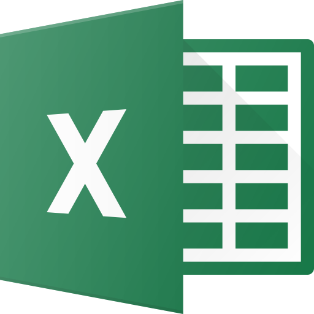

<div *ngIf="projectsReport">
    <div>
        <button (click)="openRequestForm()" class="hamburger" matTooltip="Search and filter reports" aria-label="Button that displays a tooltip when focused or hovered over">
            <i class="material-icons glyphicon glyphicon-menu-hamburger"></i>
        </button>
        

        <div class="requestForm" [ngClass]="state">
            <div (click)="closeRequestForm()" class="closeRequestForm">
                <i class="material-icons glyphicon glyphicon-menu-right"></i>
                <i class="material-icons glyphicon glyphicon-menu-right"></i>
            </div>
            <app-filter-report></app-filter-report>
        </div>
    </div>
    <app-project-report-list [projects]="projectsReport | projectFilter:conditions" #projectReportList></app-project-report-list>
</div>